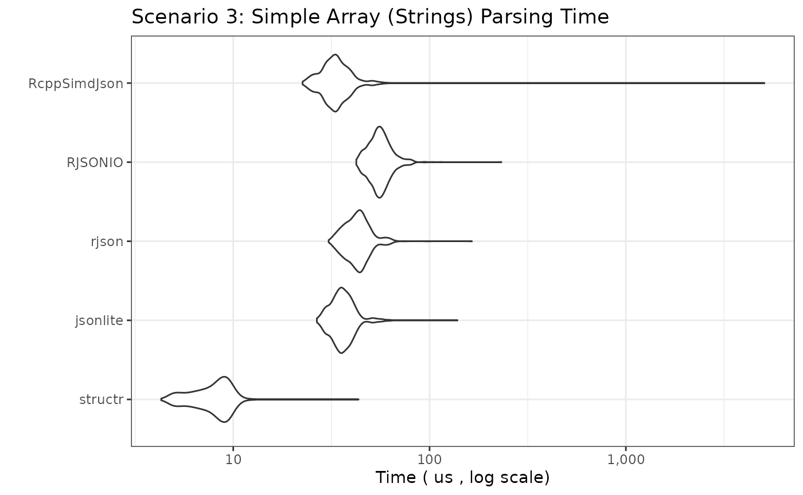
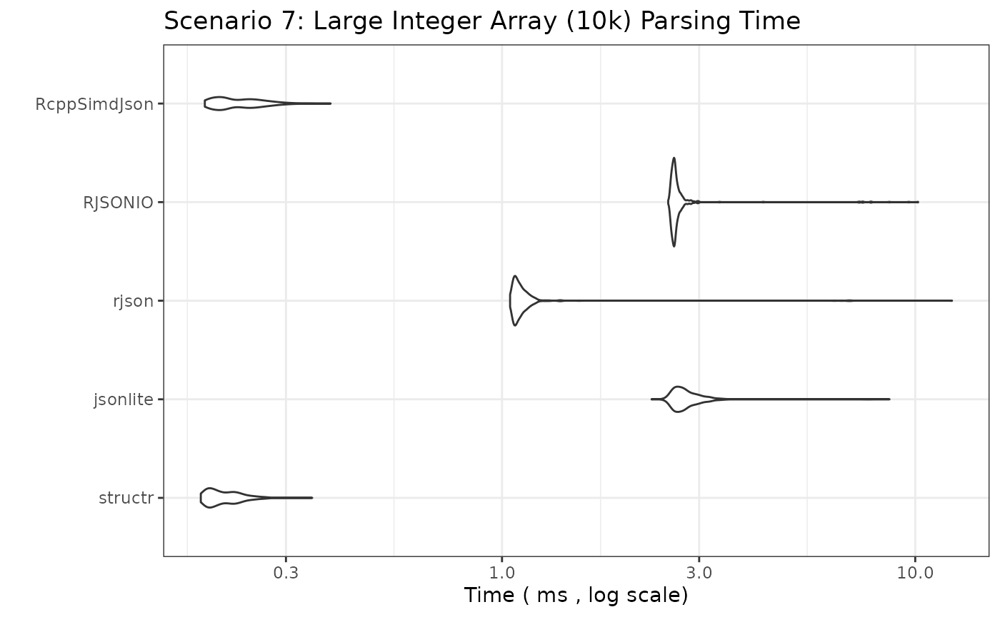

JSON Parsing Performance Benchmark: structr vs jsonlite vs rjson vs RJSONIO
2025-04-22
Source:vignettes/bench.Rmd
bench.RmdIntroduction
This document benchmarks the performance of different R packages for parsing JSON strings into R objects. We compare:
-
structr: Parses JSON and simultaneously validates it against a predefined schema (implemented in Rust usingserdeandsimd-json). -
jsonlite: A widely used, robust JSON parser (implemented in C). -
rjson: Another JSON parser (implemented in C). -
RJSONIO: A versatile JSON parser, often used for interfacing with web APIs (implemented in C).
The goal is to compare parsing speed across a wider range of JSON structures, from simple atomic values to large arrays and deeply nested objects.
Benchmark Setup
We will test several scenarios representing common and challenging
JSON structures. For structr, we pre-build the required
structure definitions outside the timed benchmark loop, reflecting
typical usage (define the structure once, parse many times).
Disclaimer
If you are reading this vignette on GitHub Pages, the benchmarks ran in GitHub Actions. The results will differ every time they run depending on many factors. If you want a true realistic benchmark, run the code in your own environment.
JSON Data and structr Schemas
The schemas and JSON objects are defined in the source code of this document. Since the values can be long, they are hidden from the final output, however, they are fully available in the source code.
Benchmarking Parameters
# Number of times to run each benchmark expression
# Adjust down for slower scenarios if needed
benchmark_times_fast <- 1000
benchmark_times_medium <- 500
benchmark_times_slow <- 100
# Unit for reporting timings
benchmark_unit_fast <- "us" # microseconds
benchmark_unit_medium <- "ms" # milliseconds
benchmark_unit_slow <- "ms" # millisecondsBenchmark Results
We now run the benchmarks for each scenario. The plots show the
distribution of execution times (lower is better). Note the Y-axis is
often on a logarithmic scale due to potentially large performance
differences. We use check = "equal" or wrap
fromJSON calls in try() for complex cases
where strict equality might fail due to floating point differences or
minor structural variations between parsers, focusing instead on raw
speed.
Scenario 1: Simple Flat Object
bm_simple_object <- microbenchmark(
structr = structr::parse_json(json_simple_object, structr_simple_object),
jsonlite = jsonlite::fromJSON(json_simple_object, simplifyDataFrame = FALSE),
rjson = rjson::fromJSON(json_simple_object),
RJSONIO = RJSONIO::fromJSON(json_simple_object, simplify = FALSE),
RcppSimdJson = RcppSimdJson::fparse(json_simple_object),
times = benchmark_times_fast, unit = benchmark_unit_fast, check = "equal"
)
print_and_plot(bm_simple_object,
title = "Scenario 1: Simple Flat Object Parsing Time",
y_label = paste("Time (", benchmark_unit_fast, ", log scale)")
)## Unit: microseconds
## expr min lq mean median uq max neval
## structr 4.849 7.6190 9.422481 9.5330 10.645 45.415 1000
## jsonlite 42.108 50.4195 59.446336 54.1665 63.082 2504.012 1000
## rjson 28.363 36.6380 41.959615 40.8660 45.365 125.514 1000
## RJSONIO 33.754 43.0905 48.559685 47.4385 52.483 130.714 1000
## RcppSimdJson 20.699 27.5915 31.973654 31.0880 34.825 72.656 1000
Scenario 2: Simple Array (Integers, 50 items)
bm_simple_array_int <- microbenchmark(
structr = structr::parse_json(json_simple_array_int, structr_simple_array_int),
jsonlite = jsonlite::fromJSON(json_simple_array_int), # simplify = TRUE default good here
rjson = rjson::fromJSON(json_simple_array_int),
RJSONIO = RJSONIO::fromJSON(json_simple_array_int), # simplify = TRUE default good here
RcppSimdJson = RcppSimdJson::fparse(json_simple_array_int),
times = benchmark_times_fast, unit = benchmark_unit_fast, check = "equal"
)
print_and_plot(bm_simple_array_int,
title = "Scenario 2: Simple Array (Integers) Parsing Time",
y_label = paste("Time (", benchmark_unit_fast, ", log scale)")
)## Unit: microseconds
## expr min lq mean median uq max neval
## structr 3.858 5.9360 7.343874 7.5190 8.4955 29.666 1000
## jsonlite 32.140 37.8610 41.336088 41.1770 43.4165 90.679 1000
## rjson 31.549 37.1745 42.301518 42.7495 45.3295 128.670 1000
## RJSONIO 45.054 52.3180 56.900786 56.1245 59.4660 146.433 1000
## RcppSimdJson 21.049 25.5780 32.265662 29.5155 31.5130 3246.998 1000
Scenario 3: Simple Array (Strings, 26 items)
bm_simple_array_str <- microbenchmark(
structr = structr::parse_json(json_simple_array_str, structr_simple_array_str),
jsonlite = jsonlite::fromJSON(json_simple_array_str),
rjson = rjson::fromJSON(json_simple_array_str),
RJSONIO = RJSONIO::fromJSON(json_simple_array_str),
RcppSimdJson = RcppSimdJson::fparse(json_simple_array_str),
times = benchmark_times_fast, unit = benchmark_unit_fast, check = "equal"
)
print_and_plot(bm_simple_array_str,
title = "Scenario 3: Simple Array (Strings) Parsing Time",
y_label = paste("Time (", benchmark_unit_fast, ", log scale)")
)## Unit: microseconds
## expr min lq mean median uq max neval
## structr 4.278 6.3775 7.632164 7.6940 8.576 41.197 1000
## jsonlite 25.868 30.6620 33.982399 33.9040 35.737 80.250 1000
## rjson 30.187 36.1875 40.506223 40.3700 43.005 112.701 1000
## RJSONIO 40.315 47.6690 51.992735 51.6115 54.547 159.368 1000
## RcppSimdJson 21.480 26.4990 33.158860 29.8800 32.155 3274.850 1000
Scenario 4: Nested Object
bm_nested_object <-
microbenchmark(
structr = structr::parse_json(json_nested_object, structr_nested_object),
jsonlite = jsonlite::fromJSON(json_nested_object, simplifyVector = FALSE),
rjson = rjson::fromJSON(json_nested_object),
RJSONIO = RJSONIO::fromJSON(json_nested_object, simplify = FALSE), # avoid matrix/df conversion
RcppSimdJson = RcppSimdJson::fparse(json_nested_object),
times = benchmark_times_fast, unit = benchmark_unit_fast, check = NULL # Disable check due to potential minor diffs
)
print_and_plot(bm_nested_object,
title = "Scenario 4: Nested Object Parsing Time",
y_label = paste("Time (", benchmark_unit_fast, ", log scale)")
)## Unit: microseconds
## expr min lq mean median uq max neval
## structr 16.842 21.8105 24.68554 24.9270 26.8450 74.359 1000
## jsonlite 26.850 33.7585 37.88613 37.3300 39.6895 77.194 1000
## rjson 41.187 49.6330 57.60227 55.0080 58.4890 2684.409 1000
## RJSONIO 53.920 63.0730 68.26628 67.7160 71.5290 181.910 1000
## RcppSimdJson 28.433 35.8370 41.16907 41.9885 44.8190 140.753 1000
Scenario 5: Array of Simple Objects (100 Objects)
bm_array_of_objects <-
microbenchmark(
structr = structr::parse_json(json_array_of_objects, structr_array_of_objects),
jsonlite = jsonlite::fromJSON(json_array_of_objects, simplifyVector = FALSE, simplifyDataFrame = FALSE), # Force list output
rjson = rjson::fromJSON(json_array_of_objects),
RJSONIO = RJSONIO::fromJSON(json_array_of_objects, simplify = FALSE), # Results in list of lists
RcppSimdJson = RcppSimdJson::fparse(json_array_of_objects),
times = benchmark_times_medium, unit = benchmark_unit_medium, check = NULL
)
print_and_plot(bm_array_of_objects,
title = "Scenario 5: Array of 100 Objects Parsing Time",
y_label = paste("Time (", benchmark_unit_medium, ", log scale)")
)## Unit: milliseconds
## expr min lq mean median uq max neval
## structr 0.186819 0.2190285 0.24807508 0.2379135 0.2697985 1.979062 500
## jsonlite 0.121667 0.1590020 0.17524477 0.1653830 0.1701625 3.438174 500
## rjson 0.161311 0.1768850 0.19117243 0.1880410 0.2039860 0.277848 500
## RJSONIO 0.250588 0.2672035 0.27745107 0.2750180 0.2843710 0.498089 500
## RcppSimdJson 0.054892 0.0671105 0.08041215 0.0779105 0.0929835 0.170338 500
Scenario 6: Large Array of Simple Objects (1000 Objects)
bm_large_array_of_objects <-
microbenchmark(
structr = structr::parse_json(json_large_array_of_objects, structr_large_array_of_objects),
jsonlite = jsonlite::fromJSON(json_large_array_of_objects, simplifyVector = FALSE, simplifyDataFrame = FALSE),
rjson = rjson::fromJSON(json_large_array_of_objects),
RJSONIO = RJSONIO::fromJSON(json_large_array_of_objects, simplify = FALSE),
RcppSimdJson = RcppSimdJson::fparse(json_large_array_of_objects),
times = benchmark_times_medium,
unit = benchmark_unit_medium,
check = NULL # Disable check
)
print_and_plot(bm_large_array_of_objects,
title = "Scenario 6: Array of 1000 Objects Parsing Time",
y_label = paste("Time (", benchmark_unit_medium, ", log scale)")
)## Unit: milliseconds
## expr min lq mean median uq max neval
## structr 2.043933 2.344128 2.6231580 2.485572 2.6905650 10.364106 500
## jsonlite 1.477657 1.515272 1.6477652 1.566838 1.6593205 7.979427 500
## rjson 1.348205 1.399927 1.5441378 1.429472 1.5780140 12.913312 500
## RJSONIO 2.001664 2.180779 2.3366398 2.212117 2.3817135 9.239458 500
## RcppSimdJson 0.334003 0.355208 0.4231348 0.381261 0.4388085 0.789102 500
Scenario 7: Large Integer Array (10,000 items)
bm_large_array_int <-
microbenchmark(
structr = structr::parse_json(json_large_array_int, structr_large_array_int),
jsonlite = jsonlite::fromJSON(json_large_array_int),
rjson = rjson::fromJSON(json_large_array_int),
RJSONIO = RJSONIO::fromJSON(json_large_array_int),
RcppSimdJson = RcppSimdJson::fparse(json_large_array_int),
times = benchmark_times_medium,
unit = benchmark_unit_medium,
check = "equal"
)
print_and_plot(bm_large_array_int,
title = "Scenario 7: Large Integer Array (10k) Parsing Time",
y_label = paste("Time (", benchmark_unit_medium, ", log scale)")
)## Unit: milliseconds
## expr min lq mean median uq max neval
## structr 0.188632 0.197464 0.2138257 0.2068615 0.2271990 0.386592 500
## jsonlite 2.506897 2.798246 2.9705044 2.9020950 3.0131515 7.297494 500
## rjson 1.048316 1.071244 1.1929075 1.0918020 1.1206310 11.028946 500
## RJSONIO 2.523789 2.575199 2.6917944 2.6079655 2.6539060 7.368397 500
## RcppSimdJson 0.190286 0.203595 0.2267920 0.2158120 0.2408995 0.437216 500
Scenario 8: Large String Array (10,000 items)
bm_large_array_str <-
microbenchmark(
structr = structr::parse_json(json_large_array_str, structr_large_array_str),
jsonlite = jsonlite::fromJSON(json_large_array_str),
rjson = rjson::fromJSON(json_large_array_str),
RJSONIO = RJSONIO::fromJSON(json_large_array_str),
RcppSimdJson = RcppSimdJson::fparse(json_large_array_str),
times = benchmark_times_medium,
unit = benchmark_unit_medium,
check = "equal"
)
print_and_plot(bm_large_array_str,
title = "Scenario 8: Large String Array (10k) Parsing Time",
y_label = paste("Time (", benchmark_unit_medium, ", log scale)")
)## Unit: milliseconds
## expr min lq mean median uq max neval
## structr 0.678626 0.6956880 0.7223176 0.7090730 0.7349565 1.159103 500
## jsonlite 2.289291 2.4676540 2.6974454 2.5757005 2.7597735 7.695878 500
## rjson 1.325052 1.3474135 1.4661859 1.3808210 1.4170140 6.198885 500
## RJSONIO 3.488258 3.5509645 3.7268805 3.5803650 3.6383885 11.805405 500
## RcppSimdJson 0.643941 0.6644395 0.6964286 0.6854695 0.7138470 1.274668 500
Scenario 9: Deeply Nested Object (10 levels)
bm_deep_nest <- microbenchmark(
structr = structr::parse_json(json_deep_nest, structr_deep_nest),
jsonlite = jsonlite::fromJSON(json_deep_nest, simplifyVector = FALSE, simplifyDataFrame = FALSE),
rjson = rjson::fromJSON(json_deep_nest),
RJSONIO = RJSONIO::fromJSON(json_deep_nest, simplify = FALSE),
RcppSimdJson = RcppSimdJson::fparse(json_deep_nest),
times = benchmark_times_fast,
unit = benchmark_unit_fast,
check = "equal"
)
print_and_plot(bm_deep_nest,
title = "Scenario 9: Deeply Nested Object (10 Levels) Parsing Time",
y_label = paste("Time (", benchmark_unit_fast, ", log scale)")
)## Unit: microseconds
## expr min lq mean median uq max neval
## structr 12.753 15.2480 17.38108 17.4425 18.680 71.222 1000
## jsonlite 16.691 19.9275 22.66625 22.8025 24.320 73.517 1000
## rjson 29.124 35.2410 39.74102 39.8245 42.229 109.625 1000
## RJSONIO 37.590 44.2175 52.55501 48.1050 51.020 4149.321 1000
## RcppSimdJson 23.243 27.5920 31.12438 31.6390 33.523 69.259 1000
Scenario 10: Wide Object (100 fields)
bm_wide_object <- microbenchmark(
structr = structr::parse_json(json_wide_object, structr_wide_object),
jsonlite = jsonlite::fromJSON(json_wide_object, simplifyVector = FALSE, simplifyDataFrame = FALSE),
rjson = rjson::fromJSON(json_wide_object),
RJSONIO = RJSONIO::fromJSON(json_wide_object, simplify = FALSE),
RcppSimdJson = RcppSimdJson::fparse(json_wide_object),
times = benchmark_times_medium,
unit = benchmark_unit_medium,
check = "equal"
)
print_and_plot(bm_wide_object,
title = "Scenario 10: Wide Object (100 Fields) Parsing Time",
y_label = paste("Time (", benchmark_unit_medium, ", log scale)")
)## Unit: milliseconds
## expr min lq mean median uq max neval
## structr 0.057858 0.0666995 0.07124966 0.0704220 0.0737730 0.120435 500
## jsonlite 0.040656 0.0498175 0.05448382 0.0533945 0.0565510 0.120666 500
## rjson 0.062897 0.0715740 0.07865277 0.0776890 0.0830295 0.147235 500
## RJSONIO 0.082184 0.0905490 0.10806506 0.0962500 0.1022060 5.207927 500
## RcppSimdJson 0.033142 0.0403755 0.04628871 0.0459810 0.0505695 0.109204 500